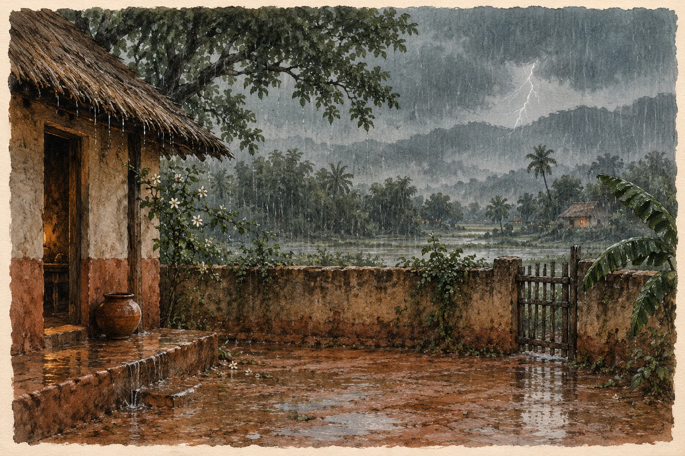

ମୂଳ କବିତା · ଓଡ଼ିଆ
ବହିଯାଉଚି ଆଷାଢ଼

*
ମୋ ଅଗଣାରେ
ମାଟି କାନ୍ଥଟି ଅନେଇଚି,
କାହାର ଏ ଆତ ଯାତ?
ଏ କାଦ ଦୁଆରରେ
ଇପ୍ସିତ ତ ପକାଇଲା ନାଇଁ ପାଦ!
ଯାହା ସବୁ ଦିଶୁଛି ସବ୍-ଜା ଛନ-ଛନିଆ ସୁନ୍ଦର
ଡଙ୍କ ମାଡ଼ି ଚାଲିଛି,
ସବୁଜ କରି ଚଉଦ ମଣ୍ଡଳ
ଏ ତ ଉପର ଠାଉରିଆ ଖେଳ
କୁଟାଗାଦି ଭିତରେ ସଜ ସାଇତା
ଅପଣ୍ଡା ଅପଣ୍ଡା ଯନ୍ତ୍ରଣା
ଯେଇ କୁ ସେଇ
ନଡ଼ାପାଣି ବହି ଯାଉଛି, ଉପର ଉପର
ଏ ନିଛାଟିଆ ବର୍ଷାଦିନରେ
ଝଡ଼ିପୋକ ଉଡ଼ୁଛି ଶେଷ ଉଡ଼ାଣ
କେଉଁ ଆଲୁଅ ତାକୁ ନିଷେଧ
ସେ କି ଜାଣେ?
ନୂଆଁ ପାଣି ପାଇଲେ ଡେଇଁ ଯାଆନ୍ତା ସିନା ମାଛ
ପୃଥିବୀର ଦି-ଘେରା ବୁଲି ଆଇଲେ ବି
ନିଜକୁ ଫେରି ପାଉଛି
ସେଇ ଏକା ମୋ ପ୍ରିୟତମ ଦୁଃଖ ପାଖରେ
କିଟି କିଟି ଅନ୍ଧାର ଗିଳିଯାଉ ମୋ ଭାଗର ଆକାଶ
ନ ଦିଶନ୍ତୁ, ଶଶୀ ତାରା କେହି
ଯେଉଁ ଅପନ୍ତରା ସ୍ମୃତି କୋଣଟି
ଧାରେ ବିଜୁଳି ପରି ଉଜୁଳି ଉଠୁଚି କେବେ କେମିତି
ତାକୁ ନେଇ ଯେତେ ଅବାନ୍ତର ଶବ୍ଦରେ
ବହିଯାଉଚି ଆଷାଢ଼
ପୁରି ଉଠୁଚି ସ୍ୱପ୍ନର ପଲାଘର
ଅପେକ୍ଷାର ଖଡ଼ିକା,
ମୋତେ ଦୋଭଜା-ଖଇ କରି ସାଇଲାରୁ
ଅଗୁଣରେ, କୁହୁଡ଼ିର ଓଦା ଦେହରେ
ଲାଗୁଛି ସେ ଅଛି,
ନିଶ୍ଚେ ଅଛି ତା ପ୍ରେମ
ଏଠି ବା କେଉଁଠି!
*
_ ଶକୁନ୍ତଳା
କବିତାଗୁଡ଼ିକ ମୂଳ ଭାଷାରେ ରହିଛି। ଭାଷା ବଦଳାଇଲେ ୱେବ୍ସାଇଟ୍ର ପରିଚୟ ଓ ନିର୍ଦ୍ଦେଶ ବଦଳିବ।